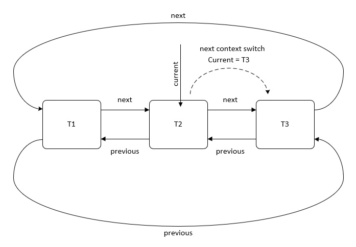
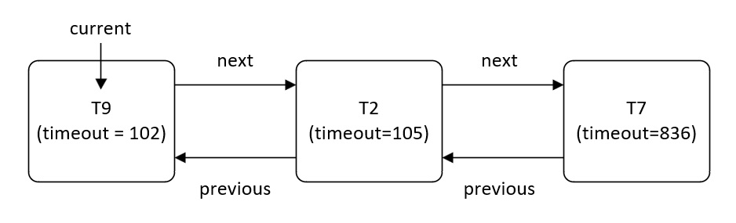
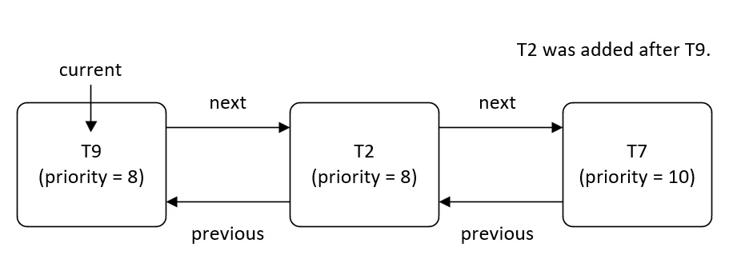

Cette page présente l'architecture et les caractéristiques du noyau temps réel Mk. Ce noyau a été développé en 2018 et est dédié aux processeurs ARM Cortex-M7.
1. Présentation
Mk est écrit en C et en assembleur ARM Thumb-2. Il ne possède aucune dépendance externe. Ses principales caractéristiques sont les suivantes :
- ✔Noyau préemptif basé sur un scheduler à priorité fixe. Le temps processeur est réparti de manière équitable entre les tâches de même priorité (Round-Robin).
- ✔Protection des tâches critiques via un environnement d'exécution sécurisé (TEE logiciel + MPU).
- ✔Support des tâches flottantes (FPU) et non flottantes.
- ✔Absence d'allocations dynamiques.
- ✔Allocation mémoire de taille fixe (Fixed-size memory pools).
- ✔Primitives de synchronisation avancées (Sémaphore, Mutex, EventField, MailBox).
- ✔Système d'exécution différé (Callback).
2. Architecture du noyau
Mk est architecturé autour d'un ordonnanceur et d'un ensemble de fonctions qui réalisent des appels système. Chaque appel système déclenche une interruption SVC qui réalise une opération d'ordonnancement ou de synchronisation de manière sécurisée.
L'ordonnanceur sélectionne la tâche à exécuter en fonction de son état et de sa priorité.
L'algorithme utilisé est de type O(1). Il repose sur l'instruction CLZ (Count Leading Zeros) du cœur Cortex-M7. Celui-ci permet de retrouver immédiatement le niveau de priorité le plus élevé, sans parcourir séquentiellement une liste.
3. Interruptions
Mk implémente les 3 exceptions matérielles suivantes :
| Exception | Rôle |
|---|---|
| SysTick | Incrémente le compteur de tick (32bits) et déclenche l'interruption PendSV |
| PendSV | Réalise l'ordonnancement, les changements de contexte et le calcul de la charge CPU. |
| SVC | Exécute les appels système réalisés par les tâches. |
4. Priorité d'interruption
Le Cortex-M7 définit ses priorités sur 4 bits (0 = la plus forte, 15 = la plus faible).
Le noyau configure la priorité des 3 exceptions précédentes avec les valeurs ci-dessous:
/* Fichier mk_scheduler_constants.h */ /* ... */ #define K_MK_SCHEDULER_BASE_PRIORITY 15 /* SysTick and PendSV */ #define K_MK_SCHEDULER_SVC_PRIORITY 7 /* SVC = MASK_PRIORITY - 1 */ #define K_MK_SCHEDULER_MASK_PRIORITY 8 /* Seuil de priorité utilisé dans les sections critiques */
Cette configuration garantit que les interruptions de haute priorité (de 0 à K_MK_SCHEDULER_SVC_PRIORITY) ne sont jamais masquées par le noyau. Elles s'exécutent donc sans aucune latence supplémentaire.
Il résulte des conditions précédentes la règle ci-dessous :
- ✔ ISRs de priorité 8 à 15 (≥ K_MK_SCHEDULER_MASK_PRIORITY) : ces interruptions peuvent réaliser des appels système .
- ✔ ISRs de priorité 0 à 7 (< K_MK_SCHEDULER_MASK_PRIORITY) : ces interruptions ne sont pas autorisées à réaliser des appels système car il y a un risque de corruption.
5. Section critique
Le noyau ne désactive jamais les interruptions (PRIMASK). Celles-ci sont néanmoins masquées (BASEPRI) dans les situations suivantes :
- ✔ lors de l'exécution d'un appel système.
- ✔ lors d'un changement de contexte.
La structure stockant les caractéristiques des appels système réalisés dans une ISR étant partagée (g_mkSVCObject), il est nécessaire de masquer les interruptions pour ne pas la corrompre. Cela rend possible l'utilisation des services du noyau dans un vecteur d'interruption au détriment d'une latence un peu plus élevée pour ces appels système.
Pour les tâches, celles-ci stockent cet objet SVC dans leur TCB, il n'y a donc aucun partage et aucune section critique n'est à déclarer.
Pour les changements de contexte, le noyau masque les interruptions pendant un court moment afin de réaliser les opérations d'ordonnancement et sélectionner la prochaine tâche à exécuter.
6. Le registre BASEPRI
L'instruction MSR BASEPRI est un peu particulière du fait qu'elle est sans effet si elle est exécutée par du code non privilégié. La conséquence est que les interruptions ne sont jamais masquées lorsqu'un appel système est déclenché par une tâche non privilégiée.
7. Le modèle de privilège
Une tâche peut être privilégiée (K_MK_TYPE_PRIVILEGED) ou non privilégiée (K_MK_TYPE_DEFAULT).
Si une tâche est privilégiée, l'ordonnanceur réinitialise le bit nPRIV du registre CONTROL. La tâche peut alors accéder à toutes les ressources du système sans restriction. A contrario, les droits d'une tâche non privilégiée sont restreints et sont définis par la MPU (Memory Protection Unit) du processeur.
Qu'elles soient privilégiées ou non, les tâches doivent toutes utiliser le même pointeur de stack : PSP (Process Stack Pointer). Le pointeur de stack MSP (Main Stack Pointer) est réservé aux interruptions et aux appels système. À noter qu'il est de la responsabilité de l'utilisateur d'initialiser correctement le système pour que le PSP soit le pointeur de stack courant.
L'utilisation du PSP par les tâches privilégiées n'entache en rien la sécurité du système car leur contexte d'exécution est protégé par la MPU.
8. L'unité à virgule flottante
Une tâche peut être flottante (K_MK_TYPE_FLOATING) ou non flottante (K_MK_TYPE_DEFAULT). Une tâche flottante a la possibilité d'utiliser les instructions de la FPU. L'ordonnanceur se charge alors de mémoriser les registres flottants lors de chaque changement de contexte.
9. Les états d'une tâche
Chaque tâche peut prendre l'un des états suivants :
- ✔ Prête (K_MK_STATE_READY).
- ✔ Bloquée (K_MK_STATE_BLOCKED).
- ✔ Temporisée (K_MK_STATE_DELAYED).
- ✔ Suspendue (K_MK_STATE_SUSPENDED).
- ✔ Bloquée et temporisée (K_MK_STATE_DELAYED_BLOCKED).
- ✔ En cours de suppression (K_MK_STATE_DELETED).
10. Les listes de tâches
Chaque liste de type T_mkList est constituée d'un pointeur de tâches. En fonction du type de liste, ce pointeur pointe vers la tête de liste ou vers un élément arbitraire de celle-ci.
typedef volatile struct T_mkList T_mkList;
struct T_mkList
{
T_mkTask* current; /*!< Pointe sur l'adresse de la tâche courante. */
};
Les listes peuvent être circulaires ou non. Toutes les listes sont doublement chaînées via les pointeurs next et previous :
/* TCB d'une tâche */
typedef volatile struct T_mkTask T_mkTask;
struct T_mkTask
{
T_mkStack stack;
T_mkFunction function;
T_mkAttribute attribute;
T_mkTask* next [2];
T_mkTask* previous [2];
T_mkTaskLoad load;
T_mkTick tick;
T_mkSynchro synchro;
T_mkPool* pool;
T_mkAddr svc;
T_mkAddr owner;
};
Du fait de cette caractéristique, une même tâche peut apparaître dans 2 listes simultanément : la liste des tâches temporisées (via K_MK_LIST_TASK) et la liste des tâches bloquées d'un objet de synchronisation (via K_MK_LIST_SYNC) en est le cas le plus représentatif.
11. La liste des tâches prêtes à être exécutées
Le noyau comporte [K_MK_SCHEDULER_PRIORITY_NUMBER + 1] listes de tâches prêtes à être exécutées (readyList).
L'indice 0 est réservé à la tâche de repos. Les autres indices correspondent au niveau de priorité des tâches.
La priorité K_MK_SCHEDULER_PRIORITY_NUMBER est la priorité la plus élevée. La priorité 1 est la priorité la plus faible (convention inverse des priorités matérielles ARM).
Les tâches de même priorité sont ordonnancées suivant un algorithme de type Round Robin.
Chaque tâche dans une même liste partage obligatoirement la même priorité. À chaque changement de contexte, si la tâche en cours d'exécution n'est pas verrouillée, l'ordonnanceur avance d'une position le pointeur de liste pour sélectionner la prochaine tâche à exécuter dans la liste la plus prioritaire.
Les listes de tâches prêtes à être exécutées étant circulaires, l'ordonnanceur ne gère pas le début et la fin de liste.

12. Le registre de priorité
Pour ne pas scanner toutes les listes à chaque changement de contexte, le noyau intègre un registre de priorité (priorityRegister). À chaque fois qu'une tâche est ajoutée dans une des listes de tâches prêtes à être exécutées, le bit correspondant du registre de priorité est positionné à 1.
L'instruction CLZ (Count Leading Zeros) est ensuite utilisée pour déterminer l'indice de la liste la plus prioritaire :
priorityRegister
= 0b...00000101
│ │
│ └── bit 0: readyList[1] non-empty (priority level 1, lowest)
└──── bit 2: readyList[3] non-empty (priority level 3)
Du fait de la taille du registre, le nombre maximal de priorités supportées par le noyau est 32.
13. La liste des tâches temporisées
Cette liste est utilisée par les fonctions mk_task_sleep et mk_task_delay et par les objets de synchronisation supportant un timeout.
Les tâches sont triées par échéance via la fonction mk_list_addTimeout. Le but est que la tête de liste pointe toujours sur la tâche dont le timeout expirera le plus tôt.
A chaque tick, l'ordonnanceur compare l'attribut delayList.current->tick.timeout au tickRegister pour positionner la ou les tâches dont l'échéance sont terminées dans la liste des tâches prêtes à être exécutées.

14. La liste des tâches suspendues
Cette liste contient les tâches explicitement suspendues par la fonction mk_task_suspend. Elles ne peuvent quitter cet état que suite à l'appel de la fonction mk_task_resume.
15. Les listes de tâches bloquées
Chaque mutex, semaphore, mailbox ou champ d'événements possède sa propre liste de tâches qui utilise les pointeurs K_MK_LIST_SYNC de la tâche T_mkTask.
Les tâches bloquées en attente d'un objet de synchronisation sont triées par priorité descendante (mk_list_addPriority) de manière à toujours sélectionner la tâche la plus prioritaire. Si deux tâches de même priorité attendent le même objet de synchronisation alors la tâche en tête de liste dans la liste se verra attribuer l'objet de synchronisation. A noter qu'une tâche peut à la fois être bloquée et temporisée, c'est-à-dire être en même temps dans deux listes différentes.

16. Le timer système
La période du timer système (SysTick) est configurée lors de l'appel de mk_start.
À chaque déclenchement du timer, les actions suivantes sont réalisées :
- ✔ Incrémentation du registre g_mkScheduler.tickRegister.
- ✔ Déclenchement d'un changement de contexte (PendSV).
Toutes les autres tâches d'ordonnancement sont effectuées durant le changement de contexte qui est déclenché après le retour du vecteur d'interruption SysTick.
17. Les changements de contexte
En plus de la sauvegarde et de la restauration des registres des tâches, l'exception PendSV effectue les opérations suivantes :
- ✔ Détermination du temps de charge CPU de la tâche en cours d'exécution.
- ✔ Vérification de la cohérence des données du noyau. Si au moins une des readyList contient une tâche alors que le bit correspondant dans le registre de priorité n'est pas positionné, une erreur critique est levée.
- ✔ Retrait des tâches dont l'échéance est arrivée à terme de la liste des tâches temporisées. Elles sont placées dans leur readyList respectives. Le registre de priorité est actualisé en conséquence.
- ✔ Détermination de l'adresse de la liste contenant les tâches de plus forte priorité avec l'instruction CLZ.
- ✔ Détermination de l'adresse de la tâche de plus forte priorité avec l'instruction CLZ.
- ✔ Mise à jour du pointeur de liste pour pointer vers la prochaine tâche à exécuter (round-robin de même priorité). Cette action n'est réalisée que si la tâche courante n'est pas vérrouillée.
- ✔ Ecriture du registre de contrôle pour activer ou non les droits privilégiés.
- ✔ Chargement du contexte de la nouvelle tâche.
Une tâche est verrouillée à chaque fois qu'un changement de contexte est déclenché explicitement (yield, sleep, block ...). Cela empêche la mise à jour du pointeur de liste, garantissant ainsi que les tâches de priorité égale s'exécutent pendant au moins un cycle complet avant que l'algorithme ne passe à la tâche suivante.
Les tâches de priorité supérieure ne sont pas affectées par ce mécanisme. Le but de l'ordonnanceur étant de toujours exécuter la tâche de plus haute priorité.
18. L'héritage de priorité
L'héritage de priorité s'applique uniquement aux mutex. Son but est de résoudre les inversions de priorité.
Si une tâche prioritaire T_H est bloquée sur un mutex détenu par une tâche moins prioritaire T_L, alors T_L reçoit temporairement la priorité de T_H. Chaque tâche possède deux champs de priorité distincts : currentPriority et priority.
L'ordonnanceur utilise toujours la priorité currentPriority pour toutes les opérations réalisées sur les listes.
19. Les appels système
Chaque fonction du noyau qui modifie l'état d'un objet de synchronisation ou d'une tâche réalise un appel système. Ceux-ci sont réalisés de la manière suivante :
- ✔ Création et configuration d'une structure contenant les caractéristiques de l'appel système T_mkSVCObject.
- ✔ Exécution de la fonction mk_svc_set. Cette fonction stocke l'objet instancié dans la donnée partagée g_mkSVCObject ou dans le TCB de la tâche en cours d'exécution en fonction du contexte d'exécution (ISR ou non). Cette fonction détecte si l'appel provient d'une routine d'interruption ou non.
- ✔ Déclenchement de l'exception SVC (_mk_svc_set).
L'extrait ci-dessous montre comment un appel système est configuré et déclenché :
/* Extrait de mk_task_sleep() */
T_mkSVCObject l_svc;
/* Configuration de l'objet SVC */
l_svc.type = K_MK_SYSCALL_SLEEP_FUNCTION;
l_svc.data[K_MK_OFFSET_TICK] = (T_mkAddr) p_tick;
/* Référencement de l'appel système dans le gestionnaire SVC */
( void ) mk_svc_set ( &l_svc );
/* Déclenchement de l'appel système */
_mk_svc_set ( &l_svc );
La fonction mk_scheduler_handle est ensuite appelée depuis le gestionnaire SVC pour traiter l'appel système en fonction de son identifiant :
| Identifiant | Gestionnaire |
|---|---|
| 1000–1007 | Création d'objet (mk_call_create). |
| 2000–2006 | Suppression d'objet (mk_call_delete). |
| 3000–3008 | Manipulation de tâches (mk_call_handleTask). |
| 4000–4006 | Synchronisation de tâches (mk_call_synchronise). |
| 5000–5003 | Déblocage des tâches (mk_call_unblock). |
Lorsqu'au moins une liste de tâches est modifiée, un changement de contexte explicite est réalisé à la fin de l'appel système.
20. Les callbacks
Mk intègre un gestionnaire de rappels permettant de différer l'exécution de fonctions. Celui-ci s'architecture autour de deux tâches (une privilégiée et l'autre non) et d'un champ d'événements.
Ces caractéristiques permettent d'attendre l'exécution d'un maximum de 30 fonctions simultanément.